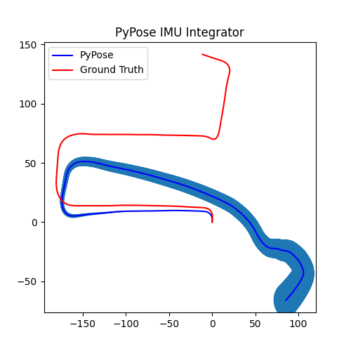

pypose.module.IMUPreintegrator
- class pypose.module.IMUPreintegrator(position=tensor([0., 0., 0.]), rotation=SO3Type LieTensor: tensor([0., 0., 0., 1.]), velocity=tensor([0., 0., 0.]), gravity=9.81007)[source]
Applies preintegration over IMU input signals.
IMU updates from duration (\(\delta t\)), angular rate (\(\omega\)), linear acceleration (\(\mathbf{a}\)) in body frame, as well as their measurement covariance for angular rate \(C_{g}\) and acceleration \(C_{\mathbf{a}}\). Known IMU rotation \(R\) estimation can also be provided for better precision.
- Parameters
position (torch.Tensor, optional) – initial postion. Default: torch.zeros(3)
rotation (pypose.SO3, optional) – initial rotation. Default:
pypose.identity_SO3()velocity (torch.Tensor, optional) – initial postion. Default: torch.zeros(3)
gravity (float, optional) – the gravity acceleration. Default: 9.81007
- forward(reset=True)[source]
Propagated IMU status.
\[\begin{align*} R_j &= {\Delta}R_{ij} * R_i \\ v_j &= {\Delta}v_{ij} * R_i + v_i + g \Delta t_{ij} \\ p_j &= {\Delta}p_{ij} * R_i + p_i + v_i \Delta t_{ij} + 1/2 g \Delta t_{ij}^2 \\ \end{align*}\]where:
\({\Delta}R_{ij}\), \({\Delta}v_{ij}\), \({\Delta}p_{ij}\) are the preintegrated measurements between the \(i\)-th and \(j\)-th time step.
\(R_j\), \(v_j\), and \(p_j\) are the propagated state variables
\(R_i\), \(v_i\), and \(p_i\) are the initial state variables
- Parameters
reset (bool, optional) – if reset the preintegrator to initial state. Default:
True- Returns
A
dictcontaining 4 items: ‘rot’ation, ‘vel’ocity, ‘pos’ition, and ‘cov’ariance.’rot’ (pypose.SO3): rotation.
lshape: (1)’vel’ (torch.Tensor): velocity.
shape: (3)’pos’ (torch.Tensor): postion.
shape: (3)’cov’ (torch.Tensor): covariance (order: rotation, velocity, position).
shape: (9, 9)
- Return type
dict
Note
Output covariance (Shape: (9, 9)) is in the order of rotation, velocity, and position.
Refer to Eq. (38) in this TRO paper for more details.
- update(dt, ang, acc, rot=None, ang_cov=None, acc_cov=None)[source]
IMU Preintegration from duration (dt), angular rate (ang), linear acceleration (acc). Uncertainty propagation from measurement covariance (cov): ang_cov, acc_cov Known IMU rotation (rot) estimation can be provided for better precision.
- Parameters
dt (torch.Tensor) – time interval from last update.
ang (torch.Tensor) – angular rate (\(\omega\)) in IMU body frame.
acc (torch.Tensor) – linear acceleration (\(\mathbf{a}\)) in IMU body frame.
rot (
pypose.SO3, optional) – known IMU rotation.ang_cov (torch.Tensor, optional) – covariance matrix of angular rate. Default:
torch.eye(3)*(1.6968*10**-4)**2(Adapted from Euroc dataset)acc_cov (torch.Tensor, optional) – covariance matrix of linear acceleration. Default:
torch.eye(3)*(2.0*10**-3)**2(Adapted from Euroc dataset)
IMU Measurements Propagation:
\[\begin{align*} {\Delta}R_{ik+1} &= {\Delta}R_{ik} \mathrm{Exp} ((w_k - b_i^g) {\Delta}t) \\ {\Delta}v_{ik+1} &= {\Delta}v_{ik} + {\Delta}R_{ik} (a_k - b_i^a) {\Delta}t \\ {\Delta}p_{ik+1} &= {\Delta}v_{ik} + {\Delta}v_{ik} {\Delta}t + 1/2 {\Delta}R_{ik} (a_k - b_i^a) {\Delta}t^2 \end{align*} \]where:
\({\Delta}R_{ik}\) is the preintegrated rotation between the \(i\)-th and \(k\)-th time step.
\({\Delta}v_{ik}\) is the preintegrated velocity between the \(i\)-th and \(k\)-th time step.
\({\Delta}p_{ik}\) is the preintegrated position between the \(i\)-th and \(k\)-th time step.
\(a_k\) is linear acceleration at the \(k\)-th time step.
\(w_k\) is angular rate at the \(k\)-{th} time step.
Uncertainty Propagation:
\[\begin{align*} C_{ik+1} &= A C_{ik} A^T + B \mathrm{diag}(C_g, C_a) B^T \\ &= A C A^T + B_g C_g B_g^T + B_a C_a B_a^T \end{align*}, \]where
\[A = \begin{bmatrix} {\Delta}R_{ik+1}^T & 0_{3*3} \\ -{\Delta}R_{ik} (a_k - b_i^g)^\wedge {\Delta}t & I_{3*3} & 0_{3*3} \\ -1/2{\Delta}R_{ik} (a_k - b_i^g)^\wedge {\Delta}t^2 & I_{3*3} {\Delta}t & I_{3*3} \end{bmatrix}, \]\[B = [B_g, B_a] \\ \]\[B_g = \begin{bmatrix} J_r^k \Delta t \\ 0_{3*3} \\ 0_{3*3} \end{bmatrix}, B_a = \begin{bmatrix} 0_{3*3} \\ {\Delta}R_{ik} {\Delta}t \\ 1/2 {\Delta}R_{ik} {\Delta}t^2 \end{bmatrix},\]where \(\cdot^\wedge\) is the skew matrix (
pypose.vec2skew()), \(C \in\mathbf{R}^{9\times 9}\) is the covarience matrix, and \(J_r^k\) is the right jacobian (pypose.Jr()) of integrated rotation \(\mathrm{Exp}(w_k{\Delta}t)\) at \(k\)-th time step, \(C_{g}\) and \(C_{\mathbf{a}}\) are measurement covariance of angular rate and acceleration, respectively.Note
The implementation is based on Eq. (A7), (A8), (A9), and (A10) of this report:
Christian Forster, et al., IMU Preintegration on Manifold for Ecient Visual-Inertial Maximum-a-Posteriori Estimation, Technical Report GT-IRIM-CP&R-2015-001, 2015.
Example
Preintegrator Initialization
>>> import torch >>> import pypose as pp >>> p = torch.zeros(3) # Initial Position >>> r = pp.identity_SO3() # Initial rotation >>> v = torch.zeros(3) # Initial Velocity >>> integrator = pp.module.IMUPreintegrator(p, r, v)
Get IMU measurement
>>> ang = torch.tensor([0.1,0.1,0.1]) # angular velocity >>> acc = torch.tensor([0.1,0.1,0.1]) # acceleration >>> rot = pp.mat2SO3(torch.eye(3)) # Rotation (Optional) >>> dt = torch.tensor([0.002]) # Time difference between two measurements
3. Preintegrating IMU measurements. Takes as input the imu values and calculates the preintegrated IMU measurements, which is further used for state estimation. Note that this function can be called multiple times before calling the forward function.
>>> integrator.update(dt, ang, acc, rot)
Call forward function to get integrated states.
>>> states = integrator() >>> states {'rot': SO3Type LieTensor: tensor([2.0000e-04, 2.0000e-04, 2.0000e-04, 1.0000e+00]), 'vel': tensor([ 0.0004, 0.0004, -0.0388]), 'pos': tensor([ 7.9608e-07, 8.0392e-07, -7.7681e-05]), 'cov': tensor([[ 1.1517e-10, -1.1376e-18, -1.1377e-18, -1.3820e-17, 1.1523e-14, -1.1510e-14, -1.3820e-20, 1.1523e-17, -1.1510e-17], [-1.1371e-18, 1.1517e-10, -1.1373e-18, -1.1510e-14, -1.3820e-17, 1.1523e-14, -1.1510e-17, -1.3820e-20, 1.1523e-17], [-1.1375e-18, -1.1370e-18, 1.1517e-10, 1.1523e-14, -1.1510e-14, -1.3820e-17, 1.1523e-17, -1.1510e-17, -1.3820e-20], [-1.3820e-17, -1.1510e-14, 1.1523e-14, 1.6000e-08, -2.2395e-18, -2.5163e-18, 3.2000e-11, -2.0812e-21, -2.8846e-21], [ 1.1523e-14, -1.3820e-17, -1.1510e-14, -2.4096e-18, 1.6000e-08, -2.0727e-18, -2.8247e-21, 3.2000e-11, -1.8848e-21], [-1.1510e-14, 1.1523e-14, -1.3820e-17, -2.1689e-18, -2.4546e-18, 1.6000e-08, -2.0030e-21, -2.8351e-21, 3.2000e-11], [-1.3820e-20, -1.1510e-17, 1.1523e-17, 3.2000e-11, -2.3062e-21, -2.5428e-21, 8.0000e-14, -2.1770e-24, -3.0055e-24], [ 1.1523e-17, -1.3820e-20, -1.1510e-17, -2.5685e-21, 3.2000e-11, -2.4488e-21, -3.0256e-24, 8.0000e-14, -2.2277e-24], [-1.1510e-17, 1.1523e-17, -1.3820e-20, -2.2312e-21, -2.5284e-21, 3.2000e-11, -2.0607e-24, -2.9413e-24, 8.0000e-14]])}
Preintegrated IMU odometry from the KITTI dataset with and without known rotation.

Fig. 1. Known Rotation.
 Fig. 2. Estimated Rotation.
{kind=link}